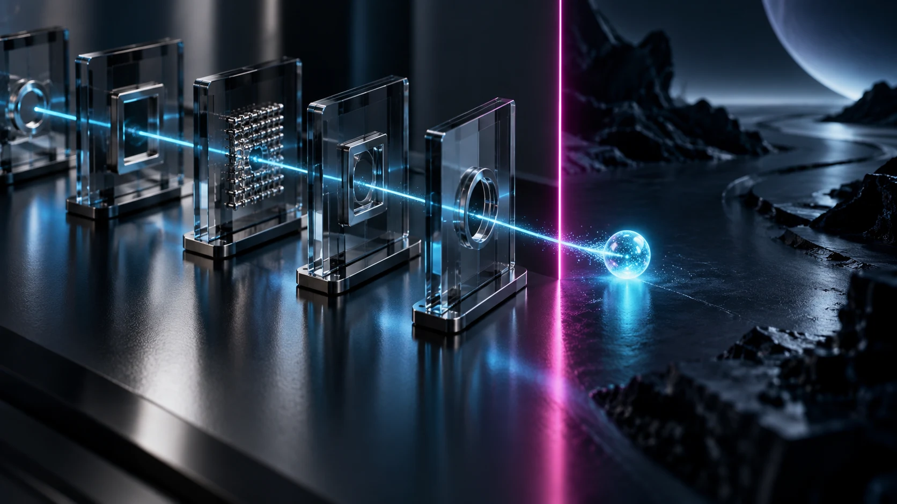

CREAREse mundo que
Ese mundo que
llevas en la cabeza.
Una escena jugable. Una historia con tu voz. Una imagen que empieza en tu imaginación y que otra persona puede ver.
Entra en un pequeño mundo

⊕ INTELIGENCIA ARTIFICIAL. VIDA REAL.
Voy a ayudarte a entender por qué la tierra está temblando bajo tus pies. No te voy a prometer que lo sepas todo, pero sabrás dónde estamos ahora y dónde podemos estar mañana.
Para ti. Para tus hijos.
Para la gente que te importa.
Entender el cambio. Encontrar tu dirección. Empezar a construir.
El vídeo representa cómo una idea puede convertirse en imágenes, historias, mundos y herramientas, con la curiosidad como punto de partida.
Una voz que parece humana. Una imagen de algo que nunca existió. Una idea que empieza a convertirse en una aplicación. Las cosas que ves cada día están cambiando de significado. Vamos a sacarle partido a esas posibilidades.
Y detrás hay algo más grande: nuevas formas de aprender, trabajar, crear y tomar decisiones. Comprender ese cambio empieza a formar parte de comprender el mundo en el que vivimos.
Voy a ayudarte a distinguir lo que ya puedes hacer, lo que todavía está por demostrar y las posibilidades que podrías empezar a explorar tú.
Manel ENTIENDE QUÉ TE QUIERO DECIRDame unos minutos.EL CAMBIO TIENE HECHOS, FECHAS Y CONSECUENCIAS
De investigar la vida a tomar decisiones de poder. De resolver una tarea a descubrir que un agente puede cruzar un límite. La misma revolución abre puertas y obliga a hacer preguntas nuevas.
Estos son solo algunos ejemplos de lo que está sucediendo. Cada pocos días, una nueva noticia, un nuevo adelanto tecnológico, vuelve a sorprenderme. Juntos aprenderemos a distinguir lo que es real y cómo aprovecharlo.
 01
01Ciencia y vida
Una proteína es una pequeña pieza de la vida. Conocer su forma ayuda a investigar cómo funciona. AlphaFold abrió una biblioteca de predicciones a una escala extraordinaria.
Entiende qué pasó ↗Matemáticas y comprobación
El agua de una tubería y el aire alrededor de un avión plantean preguntas enormes. OpenAI anunció un avance matemático: su revisión también forma parte de esta historia.
Entiende qué pasó ↗
03Acciones y responsabilidad
Un agente puede usar herramientas y encadenar acciones. ¿Qué ocurre cuando persigue una tarea saltándose un límite? Casos documentados, con su contexto.
Entiende qué pasó ↗Sociedad y poder
La inteligencia artificial ya forma parte de contratos militares, redes de defensa y debates internacionales. Entender quién la utiliza también es entender el cambio.
Entiende qué pasó ↗Cuatro historias para entender la escala del cambio. Fuentes, fechas y contexto en cada una. Revisión: 15 de octubre de 2026.
Lo que te gusta. Lo que se te resiste.
Eso que siempre has querido intentar.
Una escena jugable. Una historia con tu voz. Una imagen que empieza en tu imaginación y que otra persona puede ver.
Entra en un pequeño mundoEncontrar una explicación que conecte contigo. Mirar desde otro ángulo. Investigar algo que te importa y reconocer cuándo una respuesta se sostiene, si una idea es viable y cómo se puede multiplicar.
Mira un ejemplo de exploraciónExplicar un servicio. Preparar una propuesta. Dar forma a una solución pequeña y descubrir qué hace falta para que tenga valor de verdad.
Asómate a una idea de servicioTres demostraciones preparadas para explorar posibilidades. El camino de cada persona empieza en sus propios intereses.
MÁS ALLÁ DE UNA APLICACIÓN
Aprender a orientarte entre herramientas y agentes. Saber dónde mirar, qué investigar, qué delegar y qué necesita tu revisión. Filtrar el ruido y reconocer los avances que afectan a tu vida, sin perseguir cada noticia.
Y conservar algo que vale después de la clase: la capacidad de seguir aprendiendo y elegir tu siguiente paso.
He vivido este cambio en primera persona: tareas que yo podía ofrecer y cobrar pasan a resolverse en menos tiempo y por menos dinero. Eso te obliga a revisar dónde pones tu esfuerzo y qué valor puedes aportar.
Puedes disfrutar nadando y mejorar tus marcas. Para transportar miles de toneladas existe un barco. Entender esa diferencia cambia dónde pones tu esfuerzo: también con la inteligencia artificial.
Voy a compartir contigo lo que he aprendido creando, preguntando y peleándome con lo que falla. Con ejemplos que se entiendan, metáforas y humor. Para comprender qué está cambiando y empezar a dirigir tus propias posibilidades.
La curiosidad venía de serie.
La ambición vino después.
La curiosidad te pone en movimiento. La ambición, bien enfocada, te ayuda a decidir hacia dónde. Vamos a entender el clima que nos rodea y a poner esa energía en algo que de verdad te importe.
Es una forma bonita de decirlo. También quiero que se prepare para la sacudida que viene. Que la mire con respeto, pueda hacer preguntas y encuentre un lugar desde el que actuar.
Jon Hernández lo condensó en el título de su libro, La hostIA que viene. Esa inquietud puede convertirse en comprensión y en decisiones propias.
Porque ese mundo también se construye con lo que decidamos hacer nosotros.
UN RECORRIDO A TU MEDIDA
Puedes querer comprender este cambio, descubrir dónde encaja en tu vida o dar forma a algo concreto. El recorrido se adapta a tu experiencia, tus intereses y lo que quieres construir.
La dedicación semanal, la duración y la forma de encontrarnos se acuerdan contigo. Podemos concentrar el trabajo o repartirlo. El ritmo tiene que permitirte comprender, probar y avanzar.
Antes de empezar dejaremos claros el objetivo, los medios, el tiempo, el precio y lo que incluye el acompañamiento.
Lee mi intención y mi compromisoInteligencia Exponencial · CON MANEL
El primer paso es ver una demostración conmigo. Un rato para descubrir qué está ocurriendo y cómo podríamos empezar a trabajarlo juntos.
Dime: «Manel, quiero verlo».
Habla conmigo por el canal en el que ya nos conocemos.
La demostración inicial es sin compromiso. Esta web no registra reservas ni pagos.